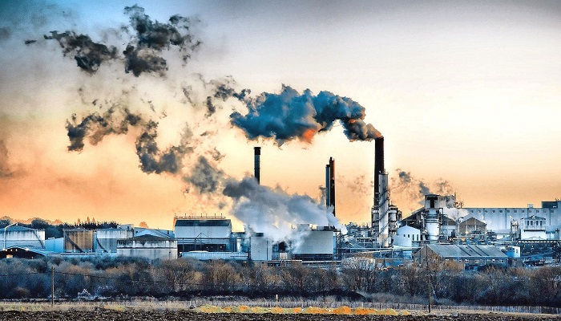

Çevre kirliliði çeþitleri genel olarak; hava kirliliði, su kirliliði, toprak kirliliði, gürültü kirliliði ve görüntü kirliliði olarak sýnýflandýrýlýr. Çevre kirlilikleri doðaya zarar vererek doðrudan veya dolaylý olarak doðada yaþamýný sürdüren tüm canlýlarýn zarar görmesine neden olmaktadýr. Günümüzde görüntü kirliliði ve ýþýk kirliliði de çevre kirlilikleri olarak karþýmýza çýkmakta, bu çevresel kirlilikler yine insanlar tarafýndan oluþturularak insanlarýn ve diðer canlýlarýn zarar görmesine neden olmaktadýr. Çevrenin kirlenmesi, ekosistemin dengelerini bozarak iklimsel deðiþikliklere sebep olmaktadýr.
*Çevreni koru, doðayý sev!
*Saðlýklý yarýnlar için çevreni koru!
*Çevreyi korumak canlýlarý korumaktýr!
*Mutlu bir gelecek için çevreni koru!
*Doðal dengenin korunmasý çevrenin korunmasýyla olur!
*Çevreni koru, ormanýna sahip çýk!
*Çevreni koru, denizine sahip çýk!
Çevre Koruma

Endüstriyel tesisler ve faaliyetlerden kaynaklanan çevre sorunlarý ile bunlara iliþkin “çevresel uygunluk zinciri” konularý bu tartýþmalarýn ve çalýþmalarýn büyük bir bölümünü teþkil etmektedir. Zincirin çevresel izin ve izlemeden sonraki halkasý olan “çevre denetimi” konusu, ülkelerin çevre otoritelerinin en yoðun çalýþtýðý konularýn baþýnda gelmektedir.
Çevre Denetimi Yönetmeliðinin amacý, çevrenin korunmasý için tesis veya faaliyetin çalýþmaya baþlamasýndan sona erdirilmesine kadar olan süreçte çevre denetiminin usul ve esaslarýný; denetim yapacak personelin, çevre yönetim birimi/çevre görevlisinin, çevre hizmeti konusunda yetkilendirilmiþ firmalarýn nitelikleri ile yükümlülüklerini düzenlemektir.
Çevre denetimi sonucunda; çevre mevzuatý kapsamýnda yükümlülüklerini yerine getirmeyen ve gerekli tedbirleri almayan kiþi, kurum, kuruluþ ve iþletmelere idari ve adli yaptýrýmlar uygulanmaktadýr. Çevre denetimleri, gerekli ekipman ve kalibrasyonu yapýlmýþ ölçüm cihazlarý ile mevzuatta belirtilen standartlarda gerçekleþtirilmeli, elde edilen veriler deðerlendirilerek çevresel politikalar oluþturulmasýnda kullanýlabilmelidir.
Bu kapsamda; gerçekleþtirilen çevre denetimleri ile elde edilen bilgiler, yürütülen birçok projede
kullanýlmaktadýr. Çevresel verilerin günümüz bilgi teknolojileri kullanýlarak yapýlan analizleri, içinde bulunduðumuz
durum ve geliþtirilmesi gereken çevresel stratejilerin belirlenmesi açýsýndan son derece önemlidir. Coðrafi bilgi sistemleri
kullanýlarak hazýrlanan kirlilik haritalarý gibi uygulamalar ile çevresel sorunlarýn bölgesel ve noktasal analizleri
yapýlabilmektedir.
Evsel Kimyasal ve Gaz Atýklar


WhatsApp Ofis E-mail
ø 0535 967 89 65 ¬ 0212 578 64 71 ¡ emrecan3_3@outlook.com